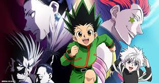
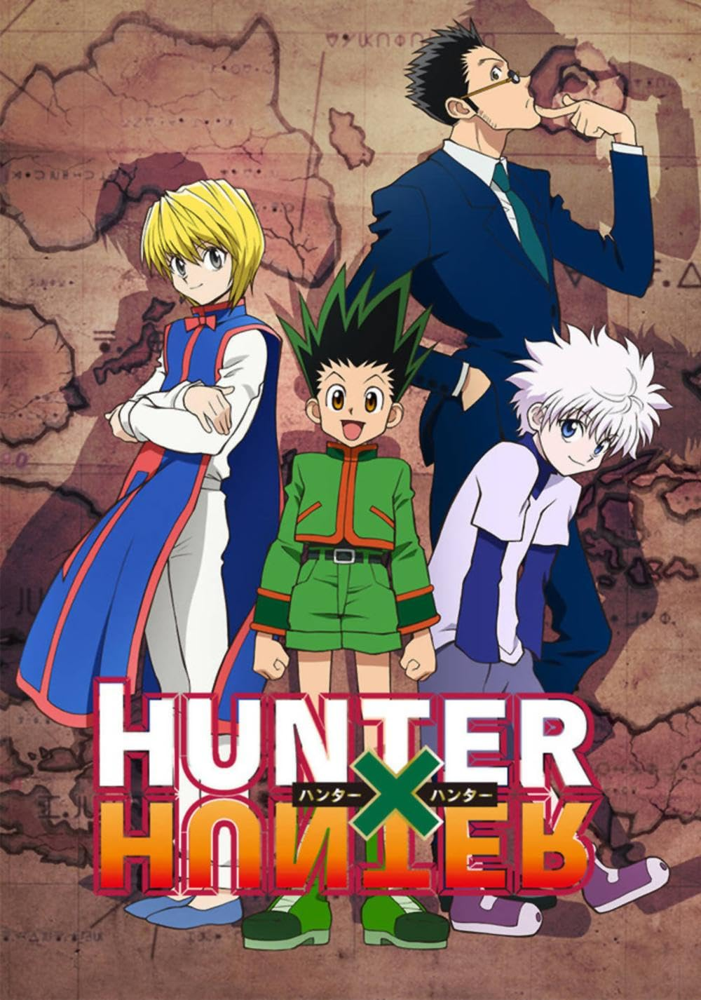

Hunter X Hunter
Hunter × Hunter (pronounced "hunter hunter") is a Japanese manga series written and illustrated by Yoshihiro Togashi. It has been serialized in Shueisha's shōnen manga magazine Weekly Shōnen Jump since March 1998, although the manga has frequently gone on extended hiatuses since 2006. Its chapters have been collected in 38 tankōbon volumes as of September 2024. The story focuses on a young boy named Gon Freecss who discovers that his father, who left him at a young age, is actually a world-renowned Hunter, a licensed professional who specializes in fantastical pursuits such as locating rare or unidentified animal species, treasure hunting, surveying unexplored enclaves, or hunting down lawless individuals. Gon departs on a journey to become a Hunter and eventually find his father. Along the way, Gon meets various other Hunters and encounters the paranormal.
Hunter × Hunter was adapted into a 62-episode anime television series by Nippon Animation and directed by Kazuhiro Furuhashi, which ran on Fuji Television from October 1999 to March 2001. Three separate original video animations (OVAs) totaling 30 episodes were subsequently produced by Nippon Animation and released in Japan from 2002 to 2004. A second anime television series by Madhouse aired on Nippon Television from October 2011 to September 2014, totaling 148 episodes, with two animated theatrical films released in 2013. There are also numerous audio albums, video games, musicals, and other media based on Hunter × Hunter.
Synopsis
Setting
Hunters (ハンター, Hantā) are licensed, elite members of humanity who are capable of tracking
down secret treasures, rare beasts, or even other individuals, and can also access locations
that regulars cannot.To obtain a license one must pass the rigorous annual Hunter Examination
run by the Hunter Association, which has a success rate of less than one in a hundred-thousand
. A Hunter may be awarded up to three stars: a single star for making "remarkable achievements
in a particular field"; they may then be upgraded to two stars for "holding an official position"
and mentoring another Hunter up to single star level; and finally upgraded to three stars for "remarkable
achievements in multiple fields".

Nen (念) is the ability to control one's own life energy or
aura, which is constantly emitted from them, knowingly or not. There are four basic Nen techniques:
Ten (纏) maintains the aura in the body, strengthening it for defense;
Zetsu (絕) shuts the aura flow off, useful for concealing one's presence
and relieving fatigue; Ren (練) enables a user to produce more Nen; and Hatsu
(發) is a person's specific use of Nen.[8] Nen users are classified into six
types based on their Hatsu abilities; Enhancers (強化系, Kyōkakei) strengthen and reinforce their
natural physical abilities; Emitters (放出系, Hōshutsukei) project aura out of their bodies; Manipulators (操作系,
Sōsakei) control objects or living things; Transmuters (変化系, Henkakei) change the type or properties of
their aura; Conjurers (具現化系, Gugenkakei) create objects out of their aura; and Specialists (特質系, Tokushitsukei)
have unique abilities that do not fall into the previous categories.[9] A Nen user can enter into a
Contract (誓約, Seiyaku) where, by pledging to follow certain Limitations (制約, Seiyaku), their abilities are
strengthened in relation to how strict they are. An example of this is Kurapika who, in order to have an
unbreakable chain that will fully restrain members of the Phantom Troupe, offered his life, should he use
it on anyone other than its members.
Plot
The story follows a young boy named Gon Freecss, who was told all his life that both his parents were dead. But when he learns from Kite, an apprentice of his father Ging Freecss, that he is still alive and has since become an accomplished Hunter, Gon leaves his home on Whale Island (くじら島, Kujira Tō) to take the Hunter Examination (ハンター試験, Hantā Shiken) in order to become a Hunter like him. During the exam, Gon meets and befriends three of the other applicants: Kurapika, the last remaining member of the Kurta clan who wishes to become a Hunter in order to avenge his clan and recover their scarlet-glowing eyes that were plucked from their corpses by a band of thieves known as the Phantom Troupe; Leorio, a prospective physician who, in order to pay for medical school, desires the financial benefits that Hunters receive; and Killua Zoldyck, another twelve-year-old boy who has left his former life as a member of the world's most notorious assassin family. Among many other examinees, Gon continuously encounters Hisoka, a mysterious and deadly transmuter who takes an interest in him. After many trials together, Gon and his friends end up passing the exam except for Killua, who fails after killing another applicant due to the influence of his brother, Illumi, and runs away to his family's estate in shame. After Gon and the others convince Killua to rejoin their side, Leorio and Kurapika depart temporarily for their own personal reasons, while Gon and Killua set for the Heavens Arena (天空闘技場, Tenkū Tōgijō), a skyscraper where thousands of martial artists compete daily in fighting tournaments, seeking to improve themselves and gain monetary rewards.[14] There they meet Zushi, a fellow Heavens Arena applicant, who has a kung fu master named Wing who trains them in utilizing Nen, a Qi-like life energy used by its practitioners to manifest parapsychological abilities, and is also considered to be the final requirement to pass the Hunter Exam. Sometime later, Gon and his friends reunite again in Yorknew City (ヨークシンシティ, Yōkushin Shiti) where they have a clash with the Phantom Troupe.
 During the occasion, two from the band of thieves are killed by Kurapika and he is forced to give up the chance of hunting down the rest in order to rescue Gon and Killua from being captured, but not without succeeding in sealing the powers of their leader, Chrollo Lucilfer. A few days later, Gon and Killua achieve their objective and begin playing Greed Island, an extremely rare and expensive video game with Nen-like properties following some clues about Ging's whereabouts.[15] While exploring the game, it is revealed that its scenario is actually set somewhere in the real world, created with Nen by a team led by none other than Ging himself. Outclassed by the challenges in the game at first, they are soon joined and trained by Biscuit Krueger, an experienced teacher of Nen and kung fu master. With Biscuit's help, Gon and Killua train their Nen and learn to shape their abilities to their traits. Killua takes a short break from Greed Island to apply for the Hunter Examination again, this time passes with success. The trio then complete the game together against all odds and Gon obtains the right to choose the artifacts from the game necessary to reunite with his father.
Anime
The first Hunter × Hunter anime series has enjoyed much more modest popularity than its manga source. Newtype listed it as having a Japanese television rating of 10.5 for the fourth quarter of 2000. The show's viewership was ranked number six among the top ten anime television series in Japan for February 2001. The series was voted as the 16th best anime of 2000 in the Anime Grand Prix, but rose to fourth place the following year. In 2001, the staff of the magazine listed Hunter × Hunter as the 94th most important anime of all time. In a 2006 web poll conducted in Japan by the network TV Asahi, the Hunter × Hunter television series was voted 28th best anime of all time. In 2010, Mania.com's Briana Lawrence listed Hunter × Hunter at number nine of the website's "10 Anime Series That Need a Reboot". Critical reception for the first Hunter × Hunter television adaptation has been generally favorable. Miyako Matsuda of Protoculture Addicts, Carl Kimlinger of the Anime News Network, and Derrick L. Tucker of THEM Anime Reviews all expressed positive views of the series' narrative and characters. Matsuda admired the adventure-filled world of Hunter × Hunter and the practical character qualities of friendship, effort, and victory inserted by Togashi.Beginning with the second Viz DVD volume, Kimlinger summarized, "Togashi's plotting is canny and occasionally insightful and Furuhashi's visuals inventive yet attuned to the measured pacing of the series. Together they create a shonen action series that is both fun to watch and curiously respectful of its audience's intelligence. A strange combination indeed." Tucker admitted to being "bewitched" by the series mainly due to the remarkable and original characters, especially the interplay between the vastly different personalities of the Phantom Troupe members. Kimlinger gave particular praise to the characteristics of the complex villain Hisoka and the deep, emotional transformation of Kurapika in the latter half of the series. Theron Martin of Anime News Network, found the first fifteen episodes entertainment, and stated "Gon also inherits Goku's inherent likability, some of the "part of the challenge is figuring out what the challenge is" bits are rather clever, and setting up a situation where a tournament proctor is actually called out for being in the wrong is a nice twist.
It does also have some fun moments". The art and animation of the Hunter × Hunter anime have also been commended by the press. Kimlinger and Tucker were impressed by the art direction of Hunter × Hunter, the former of whom critiquing the adaptation of Togashi's work by Furuhashi as having "understated energy and flair, making the most of the era's (1999) mix of traditional and CG animation to bring Gon and friends' physical feats to fluid, exhilarating life." Martin faulted both the artwork and the subtle differences in character design. "The artistry not only shows its age but, in fact, looks older than it actually is," the reviewer commented, "hearkening back to a day when digital coloring and CG enhancements were not ubiquitous and allowances for a rougher look were greater." Opinions of the series' sound and music have been somewhat mixed. Martin positively noted the soundtrack as the strongest production point of Hunter × Hunter, and was satisfied with both the English translation of the script and Ocean's voice overs. Tucker found the music satisfactory and improved as the series progressed, but did not think it lived up to its potential. Kimlinger agreeably felt the musical score to be appropriate in most instances, but criticized the English dub as "a letdown since day one".
Reception
Manga
The series ranked fourth on Takarajimasha's Kono Manga ga Sugoi! list of best manga of 2012. In November 2014, readers of Media Factory's Da Vinci magazine voted Hunter × Hunter as the eleventh Weekly Shōnen Jump's greatest manga series of all time.[166] In 2019, the series ranked seventh on Da Vinci's 19th annual "Book of the Year" list. On TV Asahi's Manga Sōsenkyo 2021 poll, in which 150,000 people voted for their top 100 manga series, Hunter × Hunter ranked eleventh.
Sales
The Hunter × Hunter manga has been largely commercially successful; having sold over 60.6 million collected volumes in Japan by February 2012, making it Shueisha's eighth best-selling manga series. This number had grown to 66.3 million copies by 2014. The manga had over 72 million copies in circulation by December 2018; over 79 million copies in circulation by November 2021; and over 84 million copies in circulation by July 2022. Several individual volumes have topped Oricon's list of the best-selling manga in Japan during their release week; such as volumes 30 through 36. Volumes 24, 27, and 30 through 34 were some of the top-selling volumes for their respective years. Hunter × Hunter was the eighth best-selling manga series of both 2012 and 2013, with 3.4 and 4.6 million copies sold those years respectively. In North America, volumes 23 through 27 have ranked within the top 300 best-selling graphics novels list of sales estimates by Diamond Comic Distributors